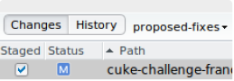
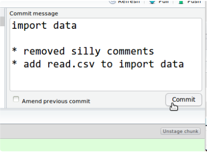

Capítulo 2 O que é o Git?
Git é uma implementação específica do controle de versão. É realmente poderoso e tem muitos recursos, mas apenas arranharemos a superfície.
2.1 O que é o GitHub?
Quando você inicia um projeto Git no seu computador, armazena todo o histórico do projeto localmente. O armazenamento do seu projeto e seu histórico é chamado de repositório. No entanto, a grande vantagem de usar o controle de versão, como o Git, é poder colaborar com outras pessoas (e também armazenar seu repositório em outro lugar). O GitHub é um site comercial que permite armazenar seu repositório publicamente de graça (você precisa pagar se quiser mantê-lo privado, também é possível obter uma conta educativa com um endereço de e-mail .edu que fornecerá algumas contas privadas gratuitas). Existem outros sites que oferecem serviços semelhantes, incluindo o BitBucket. Armazenar seus repositórios nesse site tem muitas vantagens. Ele oferece uma interface amigável para muitas operações comuns, para que você não precise se lembrar de como fazê-las na linha de comando. Eles também fornecem outros recursos úteis, incluindo um “Rastreador de problemas” e wikis.
2.2 O fluxo de trabalho Git (The Git workflow)
Já temos “commited”, “pulled” e “pushed”, mas não analisamos os detalhes do que significa como essas peças se encaixam.
O fluxo de trabalho típico é assim: - você cria / edita / modifica um arquivo dentro do seu repositório - você prepara as alterações na área de preparação - confirma essas alterações que criam uma captura instantânea permanente do arquivo no diretório Git, juntamente com uma mensagem que indica o que você fez no arquivo. Quando você inicia um novo projeto, os arquivos em seu diretório de trabalho não são rastreados. Primeiro você precisa adicionar os arquivos ao seu repositório, para que o Git possa rastreá-lo e todo seu processo ser acompanhado. Nesta fase, tudo ainda está no seu disco rígido. Para fazer upload de suas modificações (ou seja, suas confirmações) para o GitHub, você precisa enviá-las. Se você estiver trabalhando com outras pessoas, também estará enviando seu repositório compartilhado no GitHub, precisará puxar para trazer as modificações deles para a sua cópia local do repositório. Commits são baratos. Confirme com frequência e forneça mensagens úteis para acompanhar o que está fazendo. Não faça isso:
2.3 Ramificações (Branching)
A ramificação é um ótimo recurso do controle de versão. Ele permite que você duplique seu repositório existente, desenvolva ou experimente um novo recurso de forma independente e, se gostar do que está fazendo, poderá mesclar essas modificações novamente no seu projeto.
A ramificação é particularmente importante no Git, pois é o mecanismo usado quando você está colaborando com projetos externos (projetos com os quais você não está diretamente envolvido).
O RStudio não pode criar ramificações diretamente, então você precisa:
- Criar no GitHub e fazer as alterações no seu repositório;
- Criar a partir do Shell (Tools > Shell) e digite
git checkout -b new-branch
2.4 Solicitação de recebimento (Pull Request)
Com o Pull Request, você está solicitando a alguém que mantém um repositório que puxe suas alterações para o repositório.
Para emitir um Pull Request:
- Primeiro, você precisa de uma cópia do repositório que contém o código que deseja melhorar. Para fazer isso, você o bifurcará (Fork) de seu local original. Você também precisará informar ao Git que esta é uma cópia de outro projeto (também conhecido como upstream);
- Você precisa importar o código para o seu computador. Para fazer isso, você clonará o Fork no computador;
- Agora que o código está no seu computador, você pode editá-lo e modificá-lo. Quando terminar, você pode enviá-lo para o seu repositório;
- Quando o código estiver no seu repositório, você poderá emitir Pull Request para que o proprietário original do código (upstream) possa revisar, comentar, aceitar (ou rejeitar) as modificações propostas;
- Em algum momento, você precisará extrair alterações que ocorram upstream para o seu próprio repositório, se desejar continuar contribuindo para o projeto.
2.5 Como fazer isso usando o RStudio e o GitHub?
\(\color{red}{\text{PS.}}\) Antes de tudo, clique aqui para baixar o GIT, escolha a opção correspondente ao seu sistema operacional e no momento da instalação siga as opções recomendadas pelo instalador do cliente.
- Vá para a página do repositório no GitHub do projeto que você gostaria de melhorar e clique no botão “Fork” no canto superior direito.

Isso criará uma cópia do repositório na sua conta do GitHub. Por exemplo, se eu bifurcar https://github.com/r-bio/challenges-francois, ele criará uma cópia em https://github.com/fmichonneau/challenges-francois.
- No RStudio, vá para File > New Project e escolha “Version Control”, selecione “Git” e digite o URL do repositório encontrado na sua cópia do repositório listado na coluna à direita no site do GitHub.

No nosso exemplo, isso seria https://github.com/fmichonneau/challenges-francois e escolha um local apropriado no seu disco rígido para armazenar o projeto.
Após alguns segundos, o conteúdo do repositório deve aparecer no painel “Files” no RStudio.
Neste ponto, precisamos dizer ao Git que este projeto possui uma versão upstream. Não há como fazer isso no RStudio, portanto, é necessário inserir alguns comandos no shell. Vá para Tools > Shell e insira o endereço do repositório upstream (em nosso exemplo https://github.com/r-bio/challenges-francois):
git remote add upstream https://github.com/r-bio/challenges-francois. Certifique-se de que funcionou digitandogit remote –v, ele deve exibir 4 linhas, 2 que começam com a origem e o endereço do seu fork e 2 que começam com o upstream e o endereço do repositório upstream. Observe que aqui usamos pstream para nomear o repositório upstream, mas poderíamos ter dado outro nome a ele. Nesse caso, o upstream é fácil de lembrar e preciso. Mantenha sua janela do shell aberta.Agora vamos criar uma ramificação (branch) para nossas alterações, para que elas sejam independentes. Também não há como fazer isso no RStudio, portanto, vamos inserir comandos adicionais no shell para criá-lo:
git checkout -b proposed-fixes master. Aqui, proposed-fixes é um nome arbitrário que damos ao nosso branch. Idealmente, você deve escolher um nome que resuma o objetivo das alterações propostas. Depois de ver a mensagem Switched to a new branch…, você pode fechar a janela do shell.Abra o script que você deseja modificar e altere o código conforme necessário. Salve suas modificações.
- Quando terminar, confirme suas alterações:

 Verifique se você está no Branch correto (as proposed-fixes aparecem ao lado do botão History) e escreva uma mensagem de confirmação: A primeira linha deve ser curta (<50 caracteres), detalhes adicionais podem ser fornecidos após o pulo de uma linha: Feche a janela e volte para o shell. Lá, digite:
git push origin proposed-fixes. Este comando envia sua modificação para o seu fork no GitHub. - Vá para o GitHub para visualizar seu fork, em nosso exemplo, que seria:
https://github.com/fmichonneau/challenges-francois e clique no ícone verde:

Verifique se a Branch correta está selecionada no menu suspenso compare no canto superior direito e clique no botão verde: “Create pull request”.
Deixe uma mensagem com alguma explicação para as alterações e sugestões propostas e clique no botão verde “Create Pull Request”. Isso enviará uma notificação ao proprietário do repositório, que revisará sua solicitação.
2.6 O que fazer se você receber uma solicitação de recebimento (Pull Request)?
Se você deseja aceitar o pull request, você pode clicar no botão “Merge pull request” no seu repositório e, após adicionar um comentário opcional, clique novamente no botão “Accept pull request”.
Depois disso, você precisa importar (Pull) essas alterações para sua cópia local do repositório. Você deve conseguir fazer as alterações clicando em “Pull branches” no menu “Git” do seu projeto R no RStudio.
2.7 Explorando mais
Existem muitos recursos na Web para aprender sobre o Git e o GitHub:
- O Git Tower fornece bons infográficos que ilustram como as diferentes partes do fluxo de trabalho do Git se encaixam. Git workflow
- Um excelente (mas talvez muito abrangente para iniciantes) é o Pro Git Book. Este capítulo é ótimo para aprender como usar o GitHub para contribuir com um projeto.